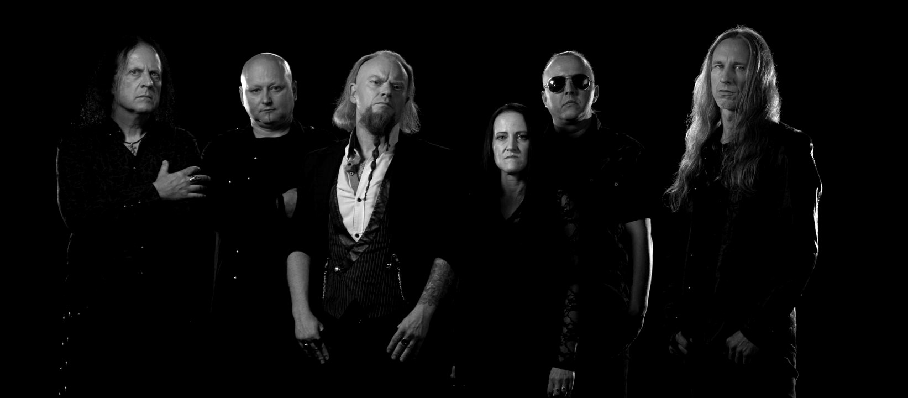

Skip to language choice / Przejdź do wyboru języka
Cemetery of Scream — official website / oficjalna strona

Start
Kraków, Polska
·
Doom / gothic metal
Est. 1992
PL
Wersja polska
Polski
Oficjalna strona zespołu
Wejdź
EN
English version
English
Official band website
Enter
50.0647° N · 19.9450° E
Est. 1992 · Kraków